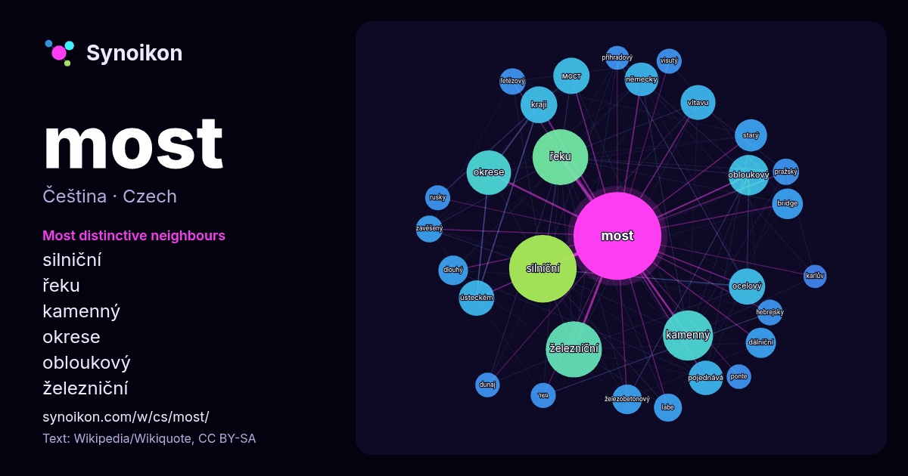

Čeština · seznam slov dne
most
“bridge” · Slova v jeho okolí z 1815 výskytů na Wikipedii, Wikiquote.

Nejtypičtější sousedé
- silniční 92×
- řeku 73×
- kamenný 61×
- okrese 50×
- obloukový 48×
- železniční 46×
- мост 39×
- ocelový 39×
- ústeckém 37×
- vltavu 37×
- pojednává 32×
- kraji 31×
- bridge 27×
- železobetonový 27×
- německy 27×
- dálniční 27×
- zavěšený 23×
- starý 23×
- labe 23×
- řetězový 22×
× = kolikrát častěji než v běžném textu Wikipedie.
Nejčastější sousedé
- silniční 145
- železniční 100
- řeku 99
- kamenný 80
- okrese 63
- města 57
- obloukový 52
- roku 47
- kraji 43
- ocelový 42
- též 42
- мост 42
- nachází 41
- ústeckém 40
- vltavu 39
- pojednává 38
- německy 36
- starý 33
- bridge 30
- části 30
V kontextu
- překážku nepohyblivý most pohyblivý most plovoucí most trvalý most zatímní / dočasný most – mostní provizorium kolmý most šikmý most Mosty lze rozdělit podle Wikipedia snippets · Most
- uvedeny na stránce Karlův most (rozcestník). Karlův most (německy Karlsbrücke, původně Kamenný most) je nejstarší stojící most přes řeku Vltavu v Praze Wikipedia snippets · Karlův most
- Most (německy Brüx, latinsky Pons) je statutární město v severozápadních Čechách, v okrese Most v Ústeckém kraji. Žije zde přibližně 63 tisíc obyvatel Wikipedia snippets · Most (město)
- Železniční most (někdy uváděný s upřesňujícím určením „vyšehradský“, „pod Vyšehradem“, „výtoňský“, „na Výtoni“, „smíchovský“, nebo i jako „Výtoňský most“) propojuje Wikipedia snippets · Vyšehradský železniční most
- O mostu v Moskvě pojednává článek Krymský most (Moskva). Krymský most či Kerčský most (rusky Крымский мост nebo Керченский мост, ukrajinsky Кримський Wikipedia snippets · Krymský most
- FK Baník Most 1909 (celým názvem: Fotbalový klub Baník Most 1909) byl český fotbalový klub, který sídlil v Mostě v Ústeckém kraji. Založen byl v roce Wikipedia snippets · FK Baník Most 1909
- Dvorecký most je most pro městskou hromadnou dopravu (včetně tramvají), cyklisty a chodce přes Vltavu v Praze, z pomezí Hlubočep a Smíchova v okolí křižovatky Wikipedia snippets · Dvorecký most
- HC Most (celým názvem: Hockey Club Most) byl český klub ledního hokeje, který sídlil v Mostu v Ústeckém kraji. Založen byl v roce 1946 pod názvem HO Uhlomost Wikipedia snippets · HC Most
Další slova
Předpočítáno 2026-10-09 s výchozím nastavením (±5 slov, střední korpus). Interaktivní mapa ho může obnovit živými daty.
Strojově přeložené rozhraní; opravy vítány.